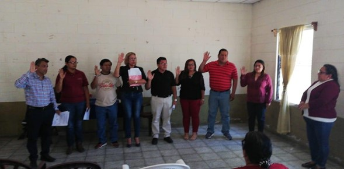
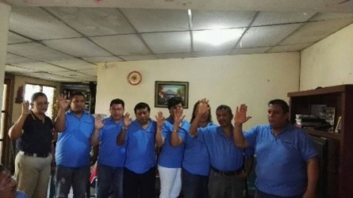

COMIENZO DE ACOTREMYSS
El proyecto cooperativo nació en el municipio de Mejicanos en el año 2016 para apoyarnos como gremio de transportistas escolares ante la falta de oportunidades de trabajo, Créditos y prestaciones sociales, y ordenarlos como un sector laboral. Pero no fue hasta el año 2017, en que fuimos legalmente constituidos por INSAFOCOOP como una COOPERATIVA DE APROVISIONAMIENTO, AHORRO Y CREDITO DE LOS TRABAJADORES ESCOLARES DE MEJICANOS Y SAN SALVADOR.

SEGUNDO CONSEJO ADMINISTRATIVO AÑO 2020
